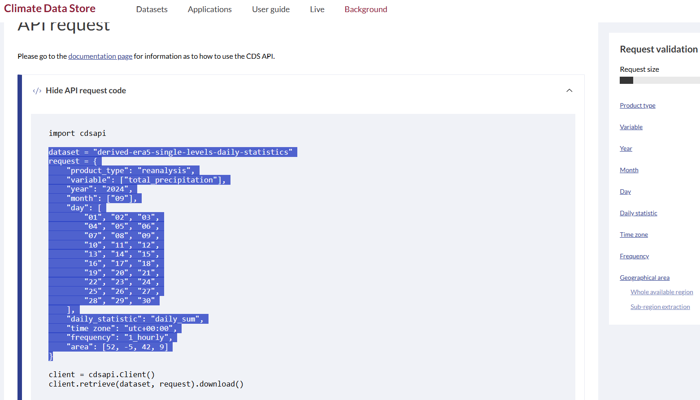
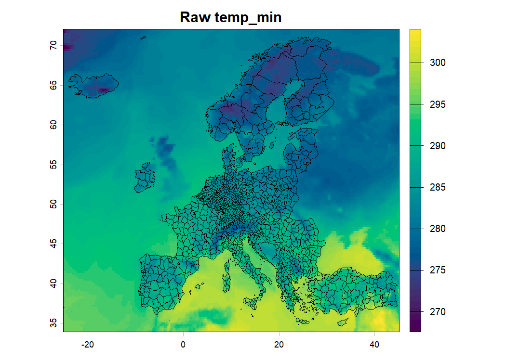
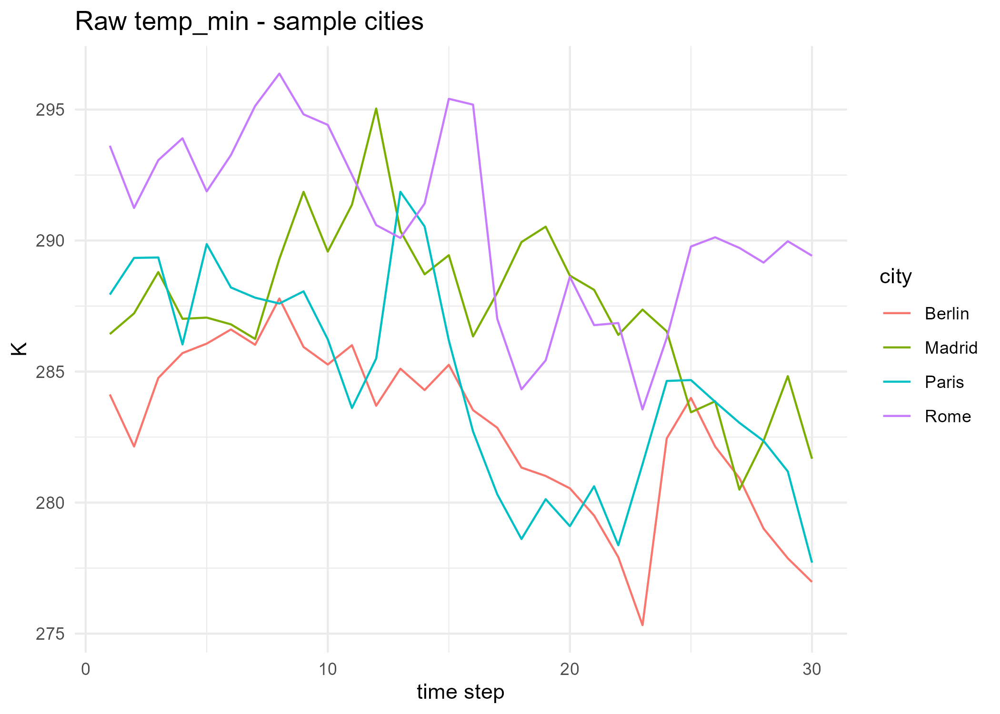
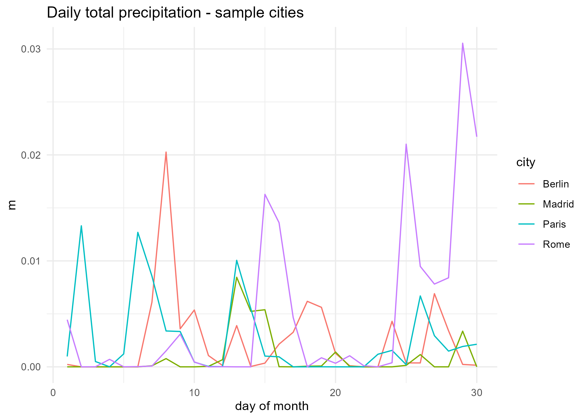
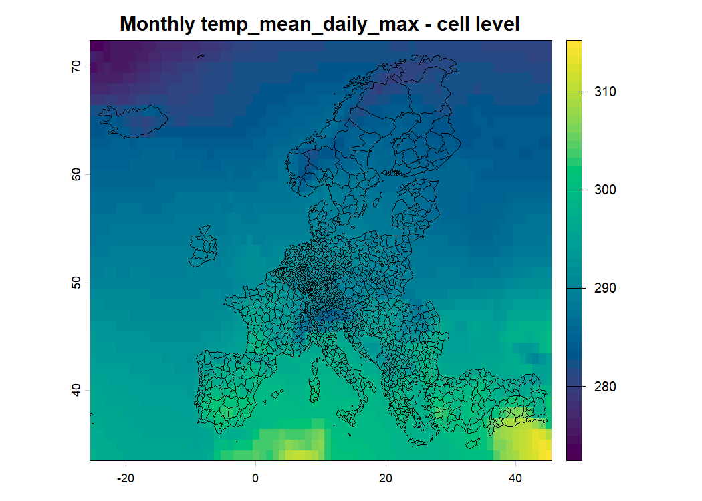
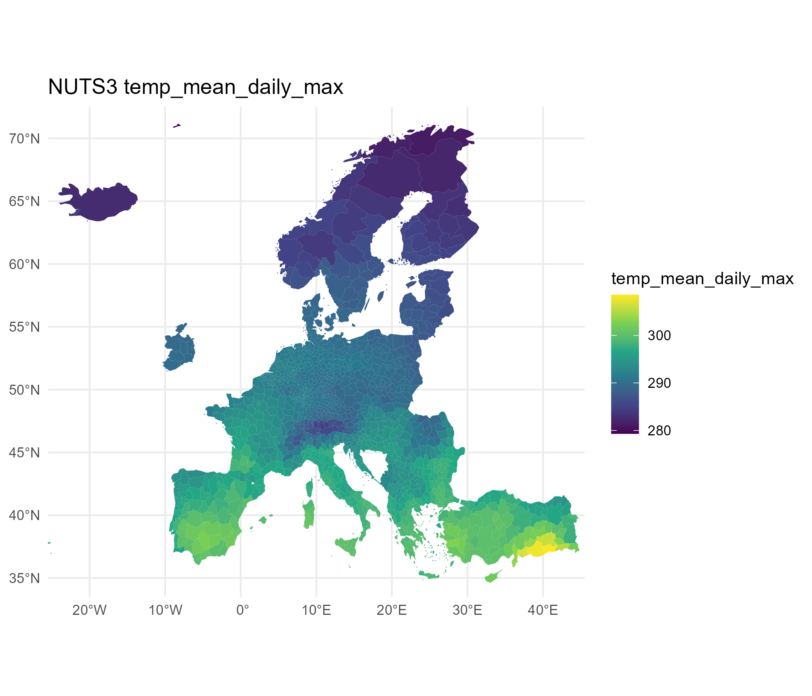

A gridded (NetCDF) dataset: one value per longitude x latitude x time cell
The next two slides show exactly what this cube looks like once R reads it in, and which packages do the reading.
From cube to table
R reads a NetCDF file in as a SpatRaster: the cube on the previous slide, still a cube (not yet a table). To plot it, extract a time series, or run a regression, we reshape it into a long (“panel”) table: one row per (longitude, latitude, day) combination.
lon
lat
day
temp_mean
2.5
48.5
1
289.3
2.5
48.5
2
288.9
5.0
48.5
1
290.1
5.0
48.5
2
290.4
Each grid cell (lon, lat) is a “unit” and each day is a “time period”: exactly the panel structure used in the regressions later in this course.
terra::extract() does this reshape for a handful of points (used in 02 and 03 to build the sample-city time series); terra::app() / tapp() do the reverse, collapsing rows back down without ever leaving the cube (used in 03 to go from daily to monthly).
Key formats and packages
Name
What it is
Why we need it
NetCDF (.nc)
The file format ERA5 comes in: a self-describing array format for gridded, multi-dimensional data
What CDS actually sends us
terra
Reads/writes rasters and does the cube-level operations (rast(), app(), tapp(), extract())
The engine behind every step in scripts/
raster
terra’s older predecessor; script_to_include/ still uses it
Not used here, but you will see it in the reference scripts
sf
Reads and handles vector data: points, lines, polygons
Represents the NUTS3 regions as geometry R can join and plot
exactextractr
Computes exact area overlaps between a raster and a set of polygons
Step 04: cells to regions
ggplot2
Grammar-of-graphics plotting
Every time series, and the NUTS3 choropleth maps (paired with sf’s geom_sf())
ecmwfr
Talks to the Copernicus Climate Data Store API from R
Step 01: the actual download
Cell-level raster maps use terra’s own base plot() directly, not ggplot2: one fewer package, and terra already has everything needed to draw a SpatRaster.
Keeping this pipeline simple, on purpose
Choice made here
What a real analysis would do instead
One month of data
Many years, to get panel/long-difference variation (see 05_prepare_panel.R)
~1° grid (regridded)
Native ERA5 resolution (0.25°) or finer (ERA5-Land, 9km)
Collapsed to monthly cell values
Kept at daily resolution
Why daily matters: economic damage functions are usually non-linear in temperature (a day at 35°C is not “half of” two days at 17.5°C), so time-aggregating before computing the non-linear response biases the estimated effect. See (Ortiz-Bobea 2021), the same Ortiz-Bobea handbook chapter cited in the main lecture deck, for how to work with daily gridded data and the interpolation/aggregation choices involved.
Folder organization
WeatherData_111/
├── scripts/ # this pipeline (running_all.R sources 00 -> 06)
├── Presentation/ # this slide deck
├── code/ERA5_APIKey.R # your CDS personal access token (gitignored)
├── data/
│ ├── source/ # raw downloads (NetCDF)
│ ├── intermediary/ # cell-level and NUTS3-level aggregates
│ └── final/ # the merged panel ready for regression
├── figures/ # every check map / time series
└── tables/ # the regression output
running_all.R
Sources every script below, in order. Run it from the project root (open WeatherData_111.Rproj first).
Loads packages, creates data/, figures/, tables/ if missing
One cfg list controls the whole run:
cfg <-list(year =2022,month =9, # <- set this to YOUR birth montharea =c(72, -25, 34, 45), # Europe: North, West, South, Eastgrid ="1.0/1.0")
Registers your CDS key (code/ERA5_APIKey.R, gitignored, never printed)
01_download.R: one month of ERA5 for Europe
Temperature (min/max only): CDS’s derived-era5-single-levels-daily-statistics dataset. It computes the daily statistic for us; each request returns one value per day.
Precipitation: the plain hourlyreanalysis-era5-single-levels dataset instead (next slide explains why).
Note
CDS rate-limits repeated requests from one account (403 ... check your retry rate) and gates some datasets behind a per-account licence click-through. Two temperature requests (not three) keeps this comfortably inside that budget; add daily_mean back if your account has more quota.
Why not daily_sum for precipitation?
CDS’s derived daily-statistics dataset looks like the natural choice for precipitation too: request total_precipitation with daily_statistic: "daily_sum" and get one number per day, just like temperature. This repo’s own img/ folder has a screenshot of exactly that request, built while exploring the API for this course:

A real CDS request attempting daily_sum on total_precipitation
total_precipitation is an accumulated variable: each hourly value is precipitation since the previous hour, not an instantaneous reading. Users on the ECMWF forum report that daily_sum on this endpoint returns nonsense for accumulated variables like this one:
“[daily_sum] gave me precipitation values for every second, which doesn’t make sense.”
Sends request as a query to the CDS API; your key from wf_set_key() authenticates it.
CDS stages the request and returns a job id. It does not compute on demand: your request joins a queue. In the console you’ll see something like: staging data transfer at url endpoint or request id: <id>
R polls the server every few seconds until the job is ready (the polling server ... spinner). For the derived daily-statistics dataset this can take several minutes.
Once ready, the file is downloaded to path and named target.
02_visualize_raw_data.R: does the download look sane?
For each of the 3 raw files: a map of one time step, and a time series at four sample cities (Paris, Berlin, Madrid, Rome) across every time step in the file.


03_time_aggreg.R: daily precipitation
The raw precipitation file is hourly. Sum every 24 hourly layers into one daily total:
n_days <-nlyr(temp_min_daily)precip_daily <-tapp(precip_hourly, index =rep(seq_len(n_days), each =24), fun ="sum")
index assigns hourly layers 1-24 to day 1, layers 25-48 to day 2, and so on; tapp() (“apply by group of layers”) sums the 24 layers within each group.

03_time_aggreg.R: collapsing the month to one value per cell
Only min/max daily temperature get downloaded (not mean, see the CDS rate limits on the previous slides), so 6 temperature summaries get computed instead of 3, from those two series:
temp_native <-c(app(temp_min_daily, fun ="mean"), app(temp_min_daily, fun ="min"),app(temp_min_daily, fun ="max"), app(temp_max_daily, fun ="mean"),app(temp_max_daily, fun ="min"), app(temp_max_daily, fun ="max"))names(temp_native) <-c("temp_mean_daily_min", ..., "temp_max_daily_max")precip_total <-app(precip_daily, fun ="sum")
Warning
c()must be called without names: c(name = app(...), ...) silently returns a plain R list instead of a SpatRaster (no error - only class() catches it). Combine first, names()<- after.
Temperature stays at ERA5’s native 0.25°, but precipitation was regridded to cfg$grid (1°) - two different grids, so resample(temp_native, precip_total) aligns them before the final c().

04_spatial_aggreg.R: the region-by-cell weight matrix
Going from a grid of cells to a table of NUTS3 regions means answering, for every region: which cells overlap me, and by how much? That mapping is a weight matrix \(W\) (regions x cells):
\[
W_{r,c} = \frac{\text{area of cell } c \text{ inside region } r}{\text{area of region } r}
\]
The region-level average is then a matrix-vector product: \(\bar{x}_r = \sum_c W_{r,c}\, x_c\).
A tiny worked example (2 regions, 4 cells):
cell 1
cell 2
cell 3
cell 4
Region A
0.6
0.4
0
0
Region B
0
0.1
0.5
0.4
Region A’s average = 0.6 x (cell 1’s value) + 0.4 x (cell 2’s value); a cell with no overlap (weight 0) simply drops out.
04_spatial_aggreg.R: building it in practice
exactextractr::exact_extract() builds exactly this matrix internally (using each polygon’s exact geometry, not just “is the cell’s centroid inside the region?”), then applies it for us:
weather_nuts3 <-lapply(names(monthly), function(v) {exact_extract(monthly[[v]], nuts3, fun ="mean", progress =FALSE)})
script_to_include/’s reference pipeline builds a comparable matrix by hand and saves it (data/intermediary/P_weight_matrix.rds), using each cell’s population as the weight instead of area, so that densely populated cells count for more. Swapping the weighting scheme is the natural refinement once this area-weighted version works.

05_prepare_panel.R: merging in Eurostat GDP
eurostat::get_eurostat("nama_10r_3gdp"): NUTS3 GDP per capita, filtered to cfg$year
Joined to the NUTS3 weather table on the NUTS3 code
Note
This is a toy, one-period cross-section. To build a real panel: loop 01_download.R / 03_time_aggreg.R / 04_spatial_aggreg.R over several years, stack the results (adding a year column), then join against every matching year.
In the spirit of Deschênes & Greenstone (2007) and Burke & Emerick (2016). With only a single year, there is no within-region variation left, so this checks the merge and the functional form, not a causal effect.
Roadmap: from this toy run to a real design
Loop the download/aggregation steps over several years to get a genuine panel
Add location fixed effects once there’s within-region variation to use
Move from monthly back to daily cell-level data before aggregating non-linear transformations (see (Ortiz-Bobea 2021))
Swap the area-weighted spatial aggregation for the population-weighted one already implemented in script_to_include/04_Spat_Aggreg.R
Ortiz-Bobea, Ariel. 2021. “Chapter 76 - The Empirical Analysis of Climate Change Impacts and Adaptation in Agriculture.” In Handbook of Agricultural Economics, edited by Christopher B. Barrett and David R. Just, vol. 5. Handbook of Agricultural Economics. Elsevier. https://doi.org/10.1016/bs.hesagr.2021.10.002.